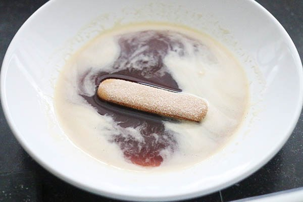
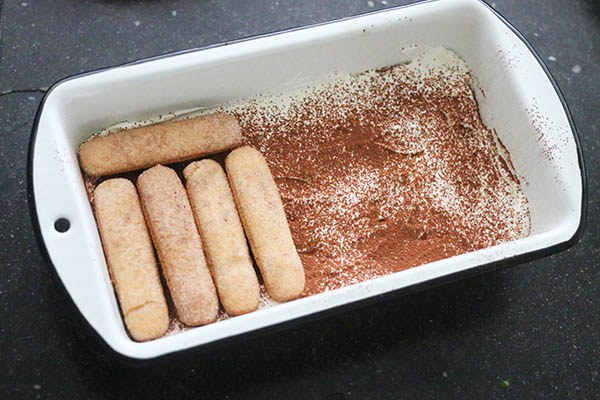

Home
Concerten
Sport
Recepten
Contact
Tiramisu
Ingrediënten:
1 gr pak Lange vingers a 175
250 gr mascarpone
250 gr slagroom
1 kop sterke koffie (afgekoeld)
1 zakje vanillesuiker
2 eetlepels cacaopoeder
Optioneel: scheutje marsala of amaretto

